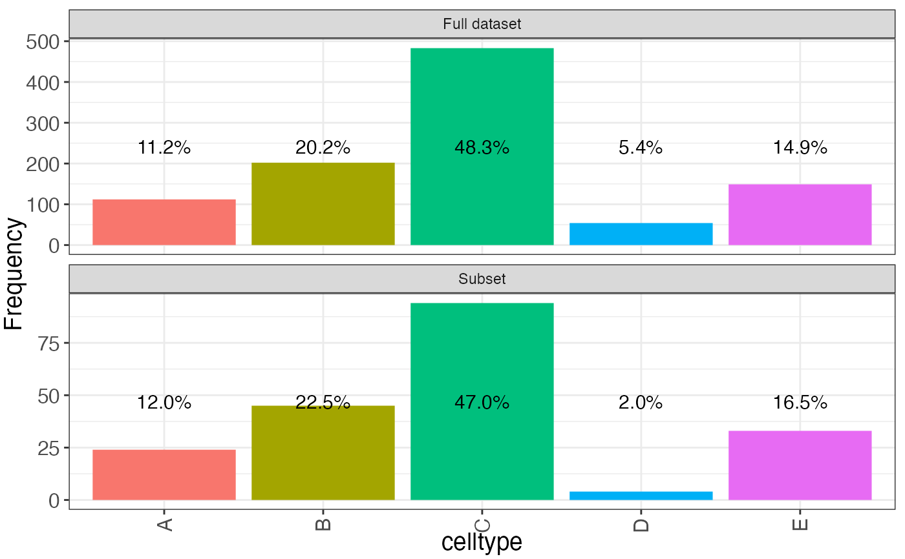

compareCompositionPlot.RdPlot the composition of a data set (e.g., the number of cells from each cell type) and contrast it with the corresponding composition of a subset.
compareCompositionPlot(
df,
idx,
column,
showPercentages = TRUE,
fontSizePercentages = 4
)A data.frame-like object (such that df[[column]]
works).
A numeric vector representing the row indexes of df
corresponding to the subset of interest. Can also be a named list
of index vectors if multiple subsets are of interest.
A character scalar corresponding to a column of
df and representing the variable for which the composition
should be calculated.
Logical scalar, indicating whether relative frequencies of each category should be shown in the plot.
Numerical scalar, indicating the font size
of the relative frequencies, if showPercentages is TRUE.
A ggplot object.
df <- data.frame(celltype = sample(LETTERS[1:5], 1000, replace = TRUE,
prob = c(0.1, 0.2, 0.5, 0.05, 0.15)))
idx <- sample(seq_len(1000), 200)
compareCompositionPlot(df, idx, "celltype")
